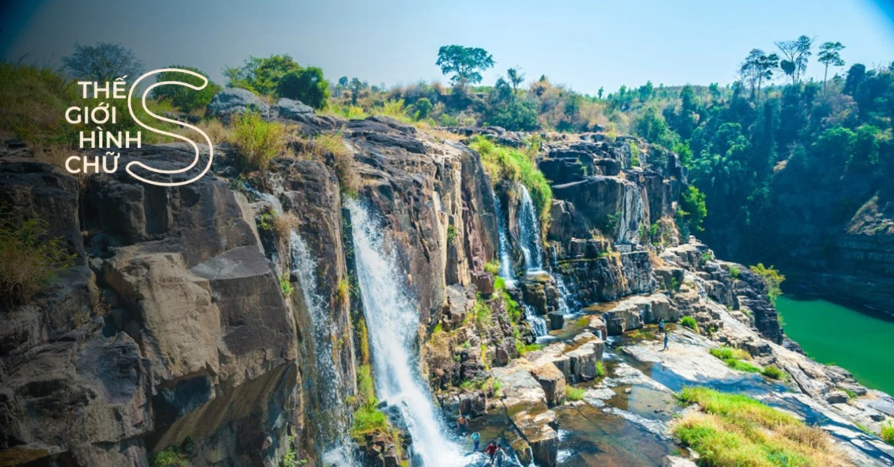
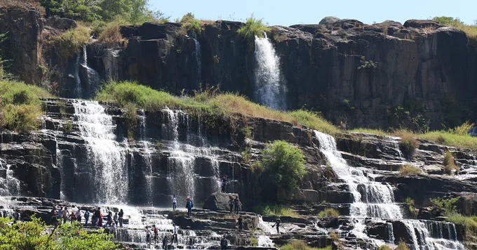
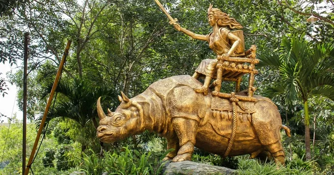
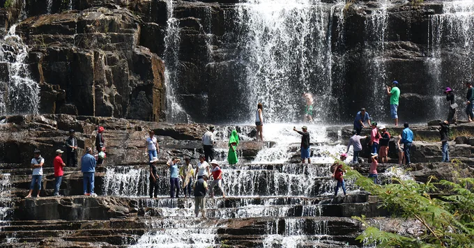
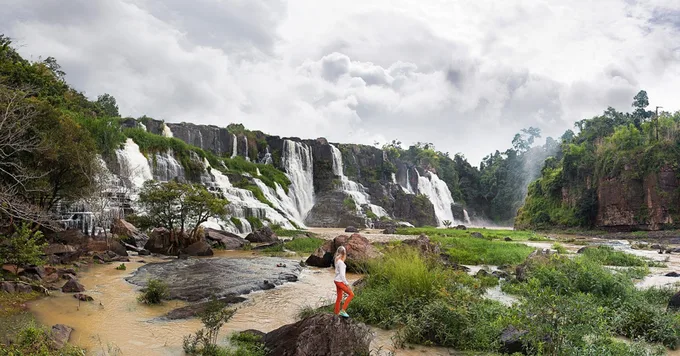
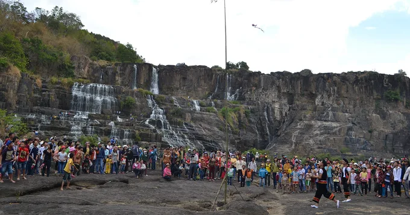
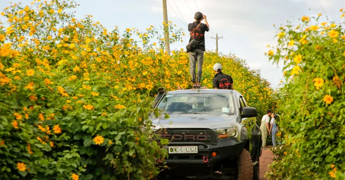
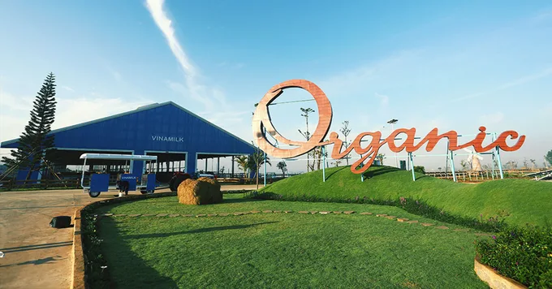

Lâm Đồng – địa điểm du lịch thơ mộng ở Tây Nguyên
Thác Pongour - Choáng Ngợp Trước Thiên Nhiên Hùng Vĩ

Nét quyến rũ hoang sơ, dữ dội nhưng cũng không kém phần thơ mộng, của thác Pongour đã khắc hoạ một khía cạnh đặc trưng của Đà Lạt nguyên bản. Cùng đi du lịch thác Pongour, Đà Lạt để thêm yêu thiên nhiên của xứ sở ngàn hoa nhé!
Vùng đất cao nguyên Lâm Đồng nổi tiếng với những khu rừng nguyên sinh bạt ngàn bao bọc những thác nước hùng vĩ bên cạnh những cánh đồng hoa dịu dàng. Không chỉ sở hữu vẻ đẹp hoang sơ, các ngọn thác này còn đưa bạn vào những câu chuyện truyền thuyết thú vị gắn liền với văn hóa người dân K’Ho bao đời trú ngụ tại nơi đây.
Trong số rất nhiều ngọn thác đẹp hoang sơ nhất ở đây như: Thác Voi, Thác Cam Ly, Thác Dantanla , Thác Đa M'bri, chắc chắn không thể bỏ qua cái tên Thác Pongour, một kiệt tác thiên nhiên sở hữu nhiều mỹ danh mà người đời đã đặt cho, làm say lòng biết bao du khách khi đặt chân đến với xứ sở sương mù.
Nếu bạn trót đem lòng yêu cảnh núi đồi hoang sơ ở Đà Lạt, chắc chắn sẽ phải dành một ngày để chiêm ngưỡng Thác Pongour, trải nghiệm những hoạt động thú vị ở đây, cùng bạn bè thưởng thức ly cà phê sáng thơm nồng giữa thung lũng đại ngàn nha.
Giới Thiệu Thác Pongour Đà Lạt

Sở hữu sự hoang sơ, dữ dội đặc trưng của một thác nước ở vùng cao nguyên, Thác Pongour trở thành điểm đến đầy thú vị cho những tâm hồn yêu thiên nhiên hoang dã, và được đánh giá là một trong những thác nước đẹp nhất vùng Nam Tây Nguyên.
Thác Pongour nằm trên dòng chảy của sông Đa Nhim, nơi đã tạo nên bao thác và hồ nước tuyệt đẹp ở Đà Lạt. Thác có độ cao khoảng 40m, rộng hơn 100m, chảy thoai thoải qua 7 bậc đá tự nhiên tạo thành những thảm nước tung bọt trắng xóa; vì thế mà người ta gọi là “Thác Bảy Tầng”. Xung quanh Thác Pongour là hệ thống rừng nguyên sinh rộng hơn 2,5ha với thảm thực vật đa dạng. Khu vực hạ lưu thác là một mặt hồ rộng thênh thang, với rất nhiều tảng đá nhấp nhô giữa dòng nước, thích hợp cho cắm trại và nghỉ ngơi, ngắm cảnh.
Hiện nay, phía trên dòng chảy Thác Pongour được ngăn đập làm thủy điện Đại Ninh nên dòng chảy của Thác Pongour không còn mạnh mẽ như trước. Tuy vậy, vẻ đẹp của thác nước vẫn không hề giảm đi nhiều.
Đến với thác Pongour bạn không chỉ được thưởng ngoạn khung cảnh hùng vĩ, nên thơ của núi rừng, mà còn được trải nghiệm một cảm giác bình yên giữa làn nước mát, tiếng chim rừng vang vọng, và tiếng nước chảy cả ngày lẫn đêm.
Theo một số tài liệu nghiên cứu địa chất của người Pháp, thì vùng đất này giàu khoáng sản cao lanh (kaolin), một loại đất sét trắng, nên họ đã đặt cho ngọn thác cái tên là Pongour, phiên âm từ tiếng K’Ho là Pon-gou, có nghĩa là “ông chủ vùng đất sét trắng”.
Khi đó, người Pháp cũng đã bình chọn Thác Pongour là “Ngọn thác hùng vĩ nhất Đông Dương”, và cũng một lần khiến Vua Bảo Đại thốt lời khen ngợi là “Nam thiên đệ nhất thác” khi tận mắt chứng kiến vẻ đẹp tuyệt mỹ của ngọn thác này. Vào năm 2000, Thác Pongour được công nhận là Danh thắng cấp quốc gia.
Thác Pongour là thác nước duy nhất tại Việt Nam có tổ chức lễ hội hàng năm vào ngày rằm tháng giêng, tức là dịp Tết Nguyên Tiêu. Vào những ngày này, rất nhiều hoạt động văn hóa, giải trí được dân địa phương tổ chức vô cùng náo nhiệt vui vẻ.
Thác Pongour Ở Đâu?
Hướng Dẫn Cách Đi Thác Pongour
Có nhiều cách để đi đến Thác Pongour bằng phương tiện cá nhân. Nếu đi từ thành phố Hồ Chí Minh, bạn theo quốc lộ 20 đến Km260 thuộc địa phận huyện Đức Trọng thì rẽ trái, đi vào thêm khoảng 6km là đến Khu du lịch sinh thái Thác Pongour.
Ở chiều ngược lại, nếu lấy trung tâm thành phố Đà Lạt làm điểm xuất phát, tuyến đường nhanh nhất là đi qua cao tốc Liên Khương – Prenn. Sau khi ra khỏi cao tốc, tiếp tục đi theo quốc lộ 20 đến Km260 thuộc địa phận huyện Đức Trọng thì rẽ phải, đi vào thêm khoảng 6km là đến Khu du lịch sinh thái Thác Pongour.
Bật mí cho #teamKlook nè: vào những ngày cuối tháng 10, đầu tháng 11, nếu đi ngang tuyến quốc lộ 20, đoạn ngang qua đập Đại Ninh, bạn sẽ thấy trên các ngọn đồi tràn ngập sắc vàng dã quỳ, thoang thoảng mùi hương trong gió, xa xa nương rẫy, đồi núi thấp thoáng... tạo nên khung cảnh hết sức quyến rũ và thơ mộng.
Sau khi đến Khu du lịch sinh thái Thác Pongour, bạn có thể gửi xe rồi đi bộ khoảng 15 phút đến thác. Nếu không muốn đi bộ đến thác, bạn có thể dùng dịch vụ xe trung chuyển với giá vé mỗi lượt là 15.000đ/người.
Nhiều bạn trẻ chọn đi phượt bằng xe máy để tận hưởng cảnh đẹp hai bên đường; nhưng nếu bạn đi theo gia đình hoặc có em bé nhỏ, thì lý tưởng nhất là thuê xe riêng có tài xế để đảm bảo an toàn, không mất thời gian tìm đường, cũng như tiết kiệm được chi phí nè.
Truyền Thuyết Thác Pongour Thú Vị

Thác Pongour gắn liền với truyền thuyết về nàng Kanai xinh đẹp, một nữ tù trưởng cai quản vùng đất Phú Hội – Tân Hội – Tân Thành bây giờ. Nàng có biệt tài thuần phục thú dữ và sai khiến chúng phục vụ cho lợi ích của con người. Trong số những con thú dữ đó, có bốn con tê giác khổng lồ, luôn đi theo nghe lệnh nàng dời non, ngăn suối, khai phá nương rẫy, và sẵn sàng chống lại những kẻ xâm lấn buôn làng. Nhờ đó, cuộc sống cộng đồng dân tộc K’Ho lúc nào cũng được bình yên, sung túc.
Vào đúng ngày rằm tháng giêng, nữ tù trưởng qua đời. Bốn con tê giác không màng ăn uống, cứ túc trực bên nàng cả ngày lẫn đêm cho đến chết. Một thời gian sau, người dân làng vô cùng kinh ngạc khi thấy tại nơi nàng qua đời bỗng xuất hiện một ngọn thác đẹp tuyệt vời gọi là Thác Thiên Thai. Thì ra, suối tóc của Kanai đã hoá thành làn nước trong xanh, còn những phiến đá xanh rêu xếp thành tầng chính là hóa thạch của sừng tê giác. Cũng từ truyền thuyết này mà người K’Ho lý giải tên Pongour còn có nghĩa là “bốn chiếc sừng tê giác”.
Để tưởng nhớ về nàng Kanai, hàng năm, vào dịp rằm tháng giêng, dân làng lại tổ chức lễ hội tại Thác Pongour với các trò chơi dân gian và hoạt động mang đậm bản sắc dân tộc, thu hút khách thập phương đến tham gia và tìm hiểu văn hóa dân tộc K’Ho.
Giá Vé Thác Pongour Tham Khảo
Theo kinh nghiệm của #teamKlook, lịch trình tham quan của bạn sẽ phong phú, hấp dẫn hơn nhiều nếu đặt tour tham quan cả ba ngọc thác hùng vĩ nhất Lâm Đồng, lại còn được ghé Vườn ánh sáng Lumiere Đà Lạt nữa. Nhanh tay đặt ngay một chỗ cho mình và hội bạn thân nào!
Thác Pongour Có Gì Chơi?
Tuy không có quá nhiều trò chơi sôi nổi như: đi xe trượt thác, chèo bè vượt thác, đu dây băng rừng như ở Khu du lịch thác Datanla nhưng không có nghĩa là Thác Pongour nhàm chán đâu. Hãy cùng Klook khám phá những hoạt động thú vị, độc đáo ở Khu du lịch sinh thái Thác Pongour nè.
1. Chiêm ngưỡng tòa thác có một không hai tại Việt Nam

Với tất cả vẻ đẹp hoang dã và kỳ vĩ, Thác Pongour được xem như biểu tượng gắn kế giữa con người và thiên nhiên. Từng dòng nước theo nhau chảy xuống trắng xóa, tựa như dải lụa mềm lướt qua những tầng đá rêu xanh, xung quanh chỉ nghe tiếng chim, tiếng nước. Bồng lai tiên cảnh là đây chứ đâu! Đến với Thác Pongour, #teamKlook nhớ chuẩn bị một số trang phục phù hợp với khung cảnh là có thể thoải mái thả hồn, thả dáng theo những khung hình ảo diệu, sống động nhất.
2. Tổ chức dã ngoại bên bờ hồ

Khu vực hạ lưu của Thác Pongour là hồ nước ngọt tự nhiên rộng lớn. Sau khi chụp ảnh chán chê, nhiều du khách thường ngồi lại bên bờ hồ để thư giãn, ngâm chân dưới dòng nước mát lạnh, hoặc qua bãi đá Tiên Sa, nơi có dòng nước chảy êm và những phiến đá lớn rất thích hợp cho việc trải bạt dã ngoại. Khu vực này khá lớn và không phụ thu phí dã ngoại nên bạn có thể thoải mái dựng lều, dựng bạt, tổ chức hát hò, ăn uống bên dòng thác thơ mộng.
Một bữa tiệc xiên que nướng thơm phức bên bờ hồ, xoay quanh những câu chuyện phiếm vui vẻ sẽ khiến chuyến đi của bạn thêm nhiều kỷ niệm đẹp phải không nào!
3. Tham gia lễ hội thác Pongour

Nếu có dịp du lịch Đà Lạt vào ngày rằm tháng giêng, hãy đến Thác Pongour và hòa mình vào lễ hội mùa xuân tưởng nhớ nàng Kanai.
Vào những ngày này, ở Thác Pongour không chỉ có những màn biểu diễn nghệ thuật truyền thống, mà còn có những trò chơi dân gian của người K’Ho. Đặc biệt, đây là dịp các đôi trai gái trong làng được gặp gỡ, tìm hiểu và bày tỏ tình cảm với nhau. Lễ hội Thác Pongour hàng năm thu hút rất nhiều sự quan tâm của du khách lẫn dân địa phương.
Kinh Nghiệm Du Lịch Thác Pongour

Nhìn chung, bạn có thể đến tham quan Thác Pongour vào bất kỳ mùa nào trong năm, nhưng sẽ đẹp nhất là vào mùa mưa, từ tháng 7 đến tháng 11 hàng năm. Vào thời gian này, lượng nước đổ xuống sẽ nhiều, mạnh mẽ, và dữ dội hơn mùa khô. Lưu ý rằng, bạn có thể leo 3-4 tầng thác để chiêm ngưỡng, chụp hình nhưng không nên leo quá cao vì dễ dẫn đến trơn trượt, té ngã, rất nguy hiểm.
Khu du lịch sinh thái Thác Pongour không có nhà hàng hay quán ăn mà chỉ có bán và cho thuê dụng cụ nướng. Vì thế, nếu có ý định dã ngoại ở đây thì bạn nên tự chuẩn bị đồ ăn cho mình và một số thiết bị cần thiết. Cung đường từ Đà Lạt tới Thác Pongour khá đẹp và bằng phẳng, tuy vậy, vẫn có những đoạn dốc và khúc cua gắt. Các bạn cầm lái nhớ chú ý tốc độ để đảm bảo an toàn giao thông nha.
Các Địa Điểm Du Lịch Gần Thác Pongour

Trên đường đi tham quan Thác Pongour, bạn có thể check-in một số địa điểm “hơi bị hay” ở gần đó như: Trang trại bò sữa organic Vinamilk hoặc Đà Lạt Milk – hai trang trại bò sữa lớn nhất Đà Lạt và cũng là địa điểm du lịch đang “làm mưa làm gió” cộng đồng du lịch hiện nay, Phim trường Story Love, Cánh đồng hoa hướng dương Đức Trọng, hay Thác Prenn.
Dĩ nhiên, Đà Lạt – Lâm Đồng còn vô số các địa điểm du lịch hấp dẫn, chưa bao giờ hạ nhiệt đối với khách du khách. Chỉ cần vào Blog của Klook Việt Nam là bạn sẽ tham khảo được rất nhiều bí kíp du lịch, các địa chỉ ăn uống, vui chơi ở Đà Lạt và một số địa phương khác ở tỉnh Lâm Đồng.
Các Nhà Nghỉ, Khách Sạn Gần Thác Pongour
Nơi lưu trú ở ngay gần Thác Pongour gần như là không có. Tuy nhiên, bạn có thể tìm một khách sạn hoặc homestay ở trong khu vực thị trấn Liên Nghĩa, huyện Đức Trọng thì việc di chuyển đến Thác Pongour cũng thuận lợi hơn một chút.
1. Mai Hoa Hotel
2. Ngoc Lan Hotel
3. Xuan Mai Villa
4. Sandals Star Hotel
5. Bang Thanh Hotel
Các Quán Ăn, Nhà Hàng Gần Thác Pongour
Nếu có dịp ghé qua huyện Đức Trọng, bạn có thể dừng chân thưởng thức ẩm thực núi rừng Tây Nguyên tại các nhà hàng, quán ăn được đánh giá cao ở đây. Bạn cũng có thể tham khảo thêm danh sách các quán ăn ngon Đà Lạt do Klook Vietnam tổng hợp để hành trình chinh phục ẩm thực Đà Lạt thêm phần sắc màu.
Một chuyến du lịch Đà Lạt - cụ tỉ là ở Thác Pongour xinh đẹp - chưa bao giờ là thừa thãi. Khi chìm đắm vào thiên nhiên hùng vĩ hay tham gia các hoạt động giải trí thuần xanh, #teamKlook sẽ cảm nhận thấy nguồn năng lượng bên trong được làm mới, xoá tan cảm xúc tiêu cực để sẵn sàng trở thành một phiên bản tốt hơn của chính mình.